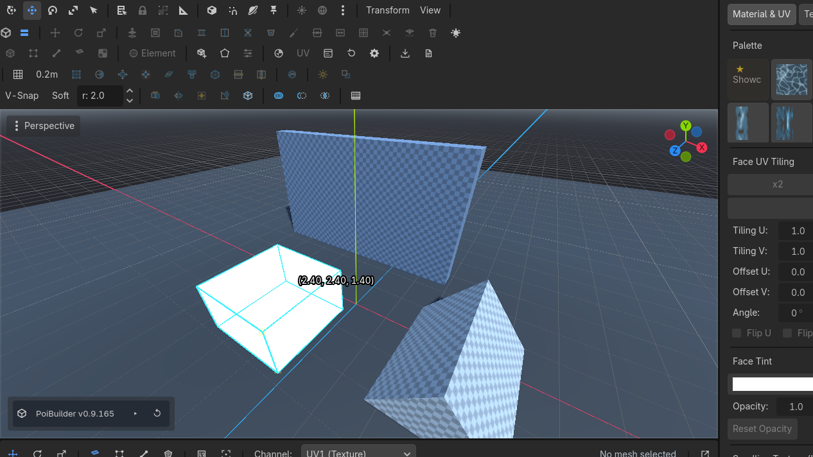
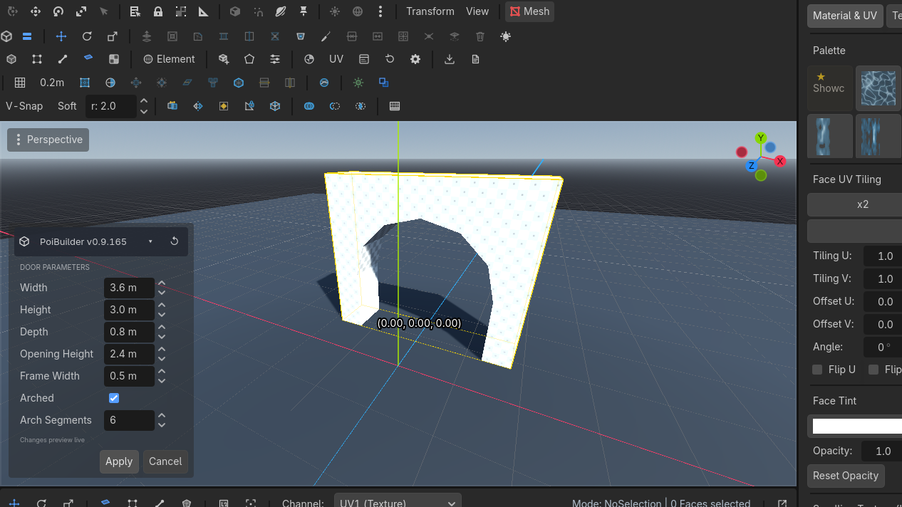

First minutes
One cube, one pulled face, one doorway. That is the whole pitch.
Work in the 3D viewport. The PoiBuilder toolbar sits directly under Godot's.
1. Make a cube
- Click
 New Shape
New Shape
 Row 2 · ShapesNew ShapeArms primitive creation: drag the base on any surface, set the height, click to confirm.Needs: Nothing (always enabled) and pick Cube.
Row 2 · ShapesNew ShapeArms primitive creation: drag the base on any surface, set the height, click to confirm.Needs: Nothing (always enabled) and pick Cube. - Press on the grid (or on any
PBMeshface). Drag a rectangle. The base stays coplanar with the surface you pressed. - Release. Move the mouse to set height. Click to confirm.
- Esc before that confirming click creates nothing.

A PBMesh node appears in the scene tree. Edit Params stays live until you change the topology.
2. Pull a face
- Click the cube. Face mode is K (toolbar
 Face
Face


 Row 2 · Selection ModesFaceKFace mode: pick and move faces; Shift+Move extrudes and Shift+Scale insets live.Needs: A PBMesh).
Row 2 · Selection ModesFaceKFace mode: pick and move faces; Shift+Move extrudes and Shift+Scale insets live.Needs: A PBMesh). - Click a side. Hover is cyan; selection is yellow.
- Hold Shift and drag the move gizmo — that is live extrude. Or click
 Extrude
Extrude


 Row 1 · Mesh OperationsExtrudeAlt + E / Shift + MoveExtrudes selected faces along their normal; in edge mode it pulls edge fins. Shift+Move does it live.Needs: Face or edge selection on the toolbar (Alt+E).
Row 1 · Mesh OperationsExtrudeAlt + E / Shift + MoveExtrudes selected faces along their normal; in edge mode it pulls edge fins. Shift+Move does it live.Needs: Face or edge selection on the toolbar (Alt+E).

3. Put a door in a wall
- New Shape → Door. Drag slightly in the direction you want the door to face (an orange arrow shows the opening direction), hold Ctrl to lock the facing, then drag sideways to set the width.
- The params modal opens. Tick Arched, raise Arch Segments if you want a smoother curve, Apply.
- Move the doorway so it sits in the wall, or boolean it out with CSG Subtract.

What to try next
- Build the whole demo map — every feature in one pass
- Stairs between two floors
- Skirting in one drag
- Fix a stretched ramp in the UV editor
- Export a retro map
When the level is built, export it and play the export — the PoiBuilder scene itself is the authoring format, and rendering it live costs significantly more than the baked map (numbers on Performance). Build and iterate in the scene; play and share the baked GLB/PBM.
Clicking another mesh in an element mode edits that mesh. Object mode (H is vertex; Object is the toolbar button) is how you move several meshes at once.